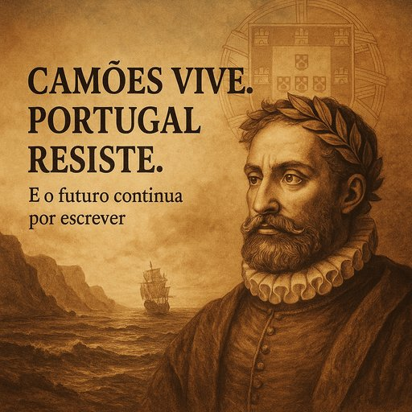

Publicado em 2025-06-10 10:57:33
Hoje é dia de erguer bem alto a memória e o génio de Luís de Camões, o nosso poeta maior, que cantou Portugal como ninguém, com verbo ardente e alma universal. Um homem que, entre batalhas, naufrágios e desventuras, guardou sempre a pátria no coração e a poesia nos olhos.
Camões não é só passado — é farol. É aquele que ainda nos sussurra, do fundo do tempo, que ser português é mais do que nascer aqui: é resistir, sonhar e lutar, mesmo quando tudo parece perdido.
“Por mares nunca de antes navegados,
Passaram ainda além da Taprobana...”
Hoje, enquanto os políticos discursam e os noticiários se enchem de frases feitas, que cada um de nós celebre Camões como ele merece: com verdade, com coragem e com arte.
Porque enquanto houver um português que ainda acredita,
Camões vive.
Portugal resiste.
E o futuro continua por escrever.
Um brinde à palavra! Um brinde à esperança!
Um abraço sentido, irmão de alma lusitana. 🇵🇹📖🔥
Francisco Gonçalves in 10 June 2025
Camões não é apenas passado — é chama viva no peito de cada português que se recusa a ajoelhar perante a mediocridade. Enquanto houver memória, resistência e sonho, Portugal não se rende. Camões vive. Portugal resiste. E o futuro… continua por escrever.